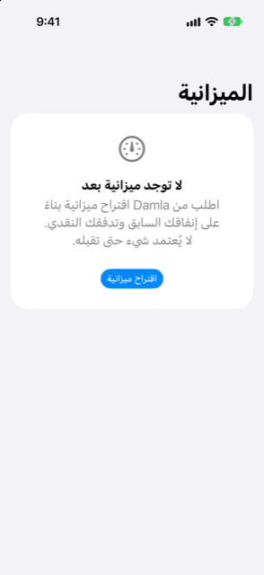

الدليل › نظرة عامة
الميزانية
حدود شهرية، أو دع Damla يقترحها من سجلك.
تضع الميزانية حدًّا شهريًا لكل فئة إنفاق، وتعرض كيف يسير الشهر الجاري مقابل تلك الحدود. ويقترح Damla الحدود من إنفاقك السابق وتدفّقك النقدي، ويمكنك تغيير أي رقم قبل قبوله.

متى تستخدمه
- تريد رقمًا شهريًا لكل فئة، محسوبًا مما أنفقته فعليًا، لا رقمًا من قالب جاهز.
- تُفرط في الإنفاق باستمرار في فئة أو فئتين وتريد إشارة واضحة أثناء الشهر، لا في نهايته.
- تريد أن تعرف كم من المجال يتركه دخلك بعد إنفاقك المعتاد والالتزامات التي يعرفها Damla بالفعل.
- تريد هدفًا للتوفير كنسبة من دخلك.
خطوة بخطوة
- افتح تبويب الرؤى واضغط على الميزانية. إذا لم تكن لديك ميزانية بعد، تقول الشاشة لا توجد ميزانية بعد وتعرض اقتراح ميزانية. وإذا كانت لديك بالفعل، اضغط على اطلب اقتراحًا جديدًا.
- في شاشة الميزانية المقترحة، اضبط الاحتفاظ بنحو … % من الدخل بالمنزلق. يبدأ عند 10 بالمئة، ويتحرك بخطوات من 5، ويرتفع حتى 40.
- راجع الملخص: الدخل الشهري المعتاد، وملتزم به شهريًا مسبقًا (الأقساط ودفعات المشتريات على مراحل، كمتوسط شهري؛ ويُخفى السطر عندما لا يوجد التزام)، والمتبقي بعد هذه الميزانية.
- اقرأ الملاحظات تحت جدير بالمعرفة، إن وُجدت.
- غيّر أي حد بكتابة القيمة في الحقل بجوار صفه.
- اضغط على استخدام هذه الميزانية للقبول، أو إلغاء للخروج دون ضبط أي شيء.
لا يُضبط أي شيء حتى تقبل اقتراحًا.
كيف يُصنع الاقتراح
يرجع Damla إلى أشهرك الكاملة من الإنفاق المسجَّل — ستة منها على الأكثر — ويأخذ وسيط المبالغ الشهرية لكل فئة رقمًا معتادًا لها. ويبدأ الاقتراح من هناك.
- تُعَدّ الفئة تكلفة ثابتة عندما تكون حاضرة في ثلاثة أشهر على الأقل منذ ظهورها الأول، وتتفاوت مبالغها بما لا يتجاوز خُمس متوسطها. التكاليف الثابتة لا تُقلَّص.
- وأي فئة أخرى مرنة. الفئات المرنة لا تُقلَّص إلا بالقدر اللازم لبلوغ هدف التوفير، وليس أبدًا بأكثر من 35 بالمئة للفئة الواحدة.
- هدف التوفير هو نسبة الدخل التي تضبطها بالمنزلق.
- ويذكر التذييل عدد الأشهر الكاملة من سجلك التي يقوم عليها الاقتراح.
وإذا لم يوجد سجل يمكن العمل منه، تقول الشاشة لا يوجد سجل كافٍ بعد وتطلب منك استيراد كشف حساب أو تسجيل بعض الإنفاق أولًا.
عندما تدخل الميزانية حيز التنفيذ
بمجرد أن تقبل ميزانية، تعرض شاشة الميزانية:
- المتبقي للإنفاق هذا الشهر: مجموع كل الحدود ناقص ما أنفقته حتى الآن هذا الشهر، مع شريط تقدم والسطر "X من Y · اليوم N من M".
- حسب الفئة: كل حد وما أنفقته منه حتى الآن. يعني الشريط الأحمر و"تجاوز بمقدار …" أنك تجاوزت الحد. ويعني الشريط البرتقالي و"الإنفاق أسرع من مرور الشهر" أنك تسبق إيقاع الشهر بأكثر من 15 بالمئة.
وتحت شريط التقدم زران: اطلب اقتراحًا جديدًا وإزالة هذه الميزانية.
من الجيد أن تعرف
- تضع الميزانية حدودًا لفئات الإنفاق بعملتك الرئيسية. لا تنقل المال، ولا تنشئ حسابات، ولا تمنع أي شيء.
- دخل الاقتراح هو ما دخل فعلًا على مدار سجلك. وإذا لم يُسجَّل شيء، يرجع إلى الدخل الذي ضبطته في تبويب الخطة، وتشير ملاحظة إلى ذلك.
- كتابة 0 في حقل حدٍّ ما تُسقط تلك الفئة من الميزانية التي تقبلها. أما إفراغ الحقل فلا: فيرجع الرقم إلى المقترح.
- تشير الملاحظات تحت جدير بالمعرفة إلى هبوط في التوقعات دون حد أدنى لرصيدك، أو فئة كانت باهظة على غير العادة الشهر الماضي، أو عجزًا لا يسدّه أي تقليص مهما بلغ. وإذا أظهر سجلك أنك تنفق أكثر مما تكسب، تذكر ملاحظة الفجوة الشهرية.
- تخبرك الميزانية بما أنفقته مقابل ما ضبطته. وهي ليست نصيحة مالية.
مقالات ذات صلة
هل هناك شيء غير واضح أو ناقص؟ اكتب إلى support@raveniq.ai واذكر الصفحة.